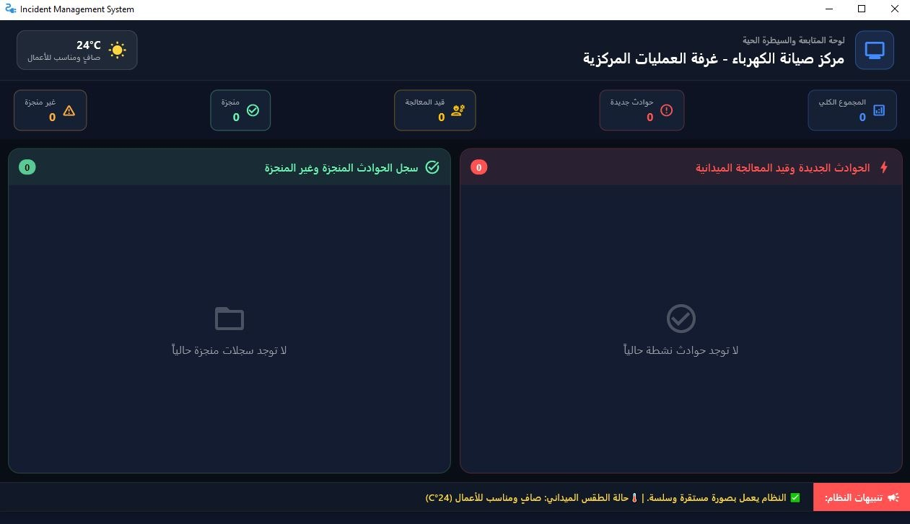

غرفة عمليات الكهرباء والخرائط
مراقبة الأصول والحوادث على الخريطة ومراجعة جودة المواقع
شرح محدث: عرض شبكة المغذيات والطبقات.
فيديو الشرح المختصر
شرح مرئي صامت بعناوين عربية وصور تعليمية. ليس تسجيل شاشة حياً. تنزيل الفيديو · كل الفيديوهات
نص الفيديو
- افتح غرفة عمليات الكهرباء وحدد المحطة أو المحولة المطلوبة.
- راجع النقطة الدالة والإحداثيات قبل استخدام الملاحة.
- الخريطة مؤشر للمواقع والحوادث، وليست إثباتاً لوجود التيار.
شنو تعمل غرفة العمليات؟
غرفة عمليات الكهرباء في النسخة الحالية تُستخدم لعرض خريطة الأصول والمواقع، مراجعة الحوادث المفتوحة، ربطها بالمحولات عند توفر هوية كافية، وإبراز البيانات التي تحتاج تدقيقاً.
هذه الشاشة لا تنفذ الفصل أو إعادة التغذية كهربائياً؛ هي أداة معلومات ومتابعة، ولا يجوز استخدامها كبديل لتصاريح التشغيل وإجراءات السلامة.
عناصر الشاشة
- خريطة مع أدوات للتقريب والتصغير والتنقل.
- قوائم أو فلاتر لإظهار المحطات والمحولات والحوادث النشطة.
- بحث بالاسم أو بالمحطة أو المغذي أو المحولة.
- بطاقة أصل كهربائي تُظهر سياق المحطة والمغذي والمحولة.
- مؤشرات للحوادث المفتوحة أو المتأخرة أو التي تعذّر ربطها بأصل محدد.
- تصدير مراجعة بيانات بعض الموجودات إلى Excel بحسب الإصدار.
البحث عن محولة وتحديدها
- اكتب رقم المحولة أو جزءاً من اسم المحطة في البحث.
- راجع اسم المحطة والمغذي، لأن رقم المحولة قد يتكرر.
- افتح البطاقة الخاصة بالنتيجة الصحيحة.
- إذا كانت للمحولة GPS مستقل ومقبول، يمكن تركيز الخريطة عليه وفتح الملاحة.
- إذا ظهر «بدون GPS»، لا تستخدم موقع المحطة أو نقطة وهمية لتوجيه الفرقة.
ألوان العلامات ومصدر الإحداثيات
في التحديث المخصص لحماية مواقع المحولات فُصل عرض موقع المحطة عن موقع المحولة. فإذا ضغط المستخدم علامة محطة تظهر نافذة توضّح أن الموقع للمحطة وحدها.
قد تُجمَّع علامات محولات متجاورة بصرياً على الخريطة لتسهيل العرض، وهذا لا ينبغي أن يغير إحداثياتها الحقيقية.
ما الذي يعنيه حادث غير مرتبط؟
إذا لم يستطع النظام مطابقة سجل حادث بمحولة من قاعدة الأصول فقد يظهر بوصفه غير مرتبط. من الأسباب: رقم غير كامل، اسم مغذٍ مختلف، أصل نقل إلى مغذٍ آخر، أو غياب المعرّف الفريد.
لا تصلح المطابقة بكتابة GPS تقديري؛ صحح هوية الأصل أو بيانات الحادث مع الاحتفاظ بالتاريخ.
التحسينات الموصى بها
- لوحة تدقيق GPS: مواقع بلا GPS، إحداثيات مكررة، تغييرات تحتاج مراجعة.
- سجل تغيرات الإحداثيات مع القيم القديمة والجديدة والمستخدم والجهاز والوقت.
- طلبات إحداثيات من المساح بانتظار موافقة المركز.
- تنبيه عند محاولة استبدال GPS معتمد باستيراد قديم.
- ملخص حي للحوادث المرتبطة بكل محولة، مع وقت الاستلام والإنجاز.
الصور والأمثلة
صور الشرح التوضيحية مبنية على أسماء وأزرار من ملفات المشروع، وليست لقطات تشغيل فعلية. الصورة المعلَّمة «لقطة فعلية» مصدرها صورة سابقة أرسلها صاحب النظام. عند تزويد لقطات Windows وAndroid الأصلية يمكن استبدال النماذج دون تغيير الشرح.

تقدر ترجع للفهرس أو تنتقل إلى الفصل التالي. إذا كان المطلوب يخص جهازك الفعلي، راجع صلاحية الحساب والإصدار المثبّت قبل تنفيذ أي خطوة.